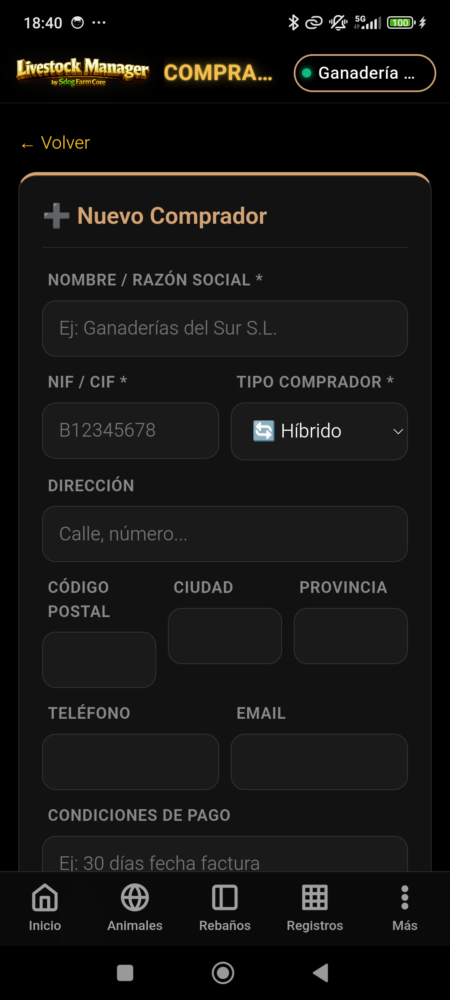
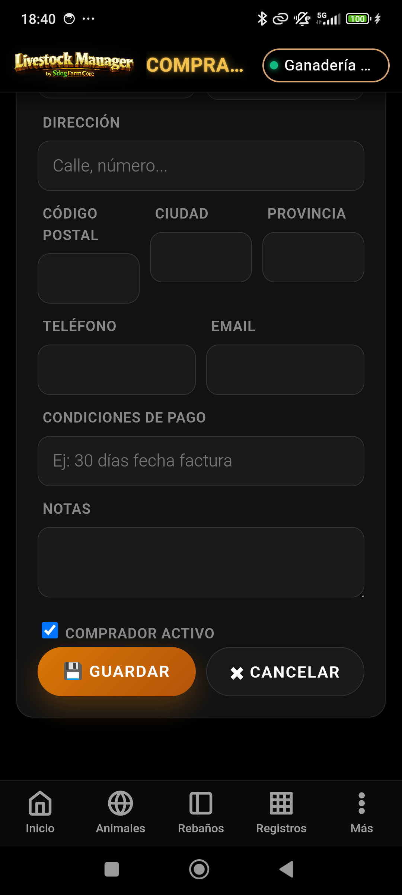
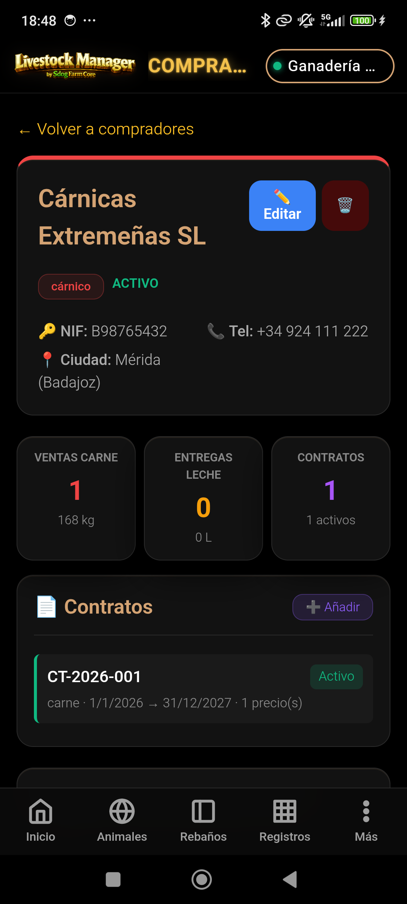
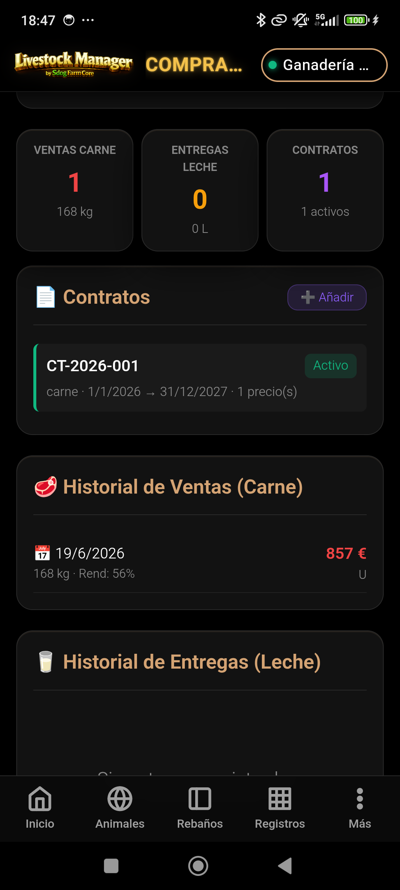
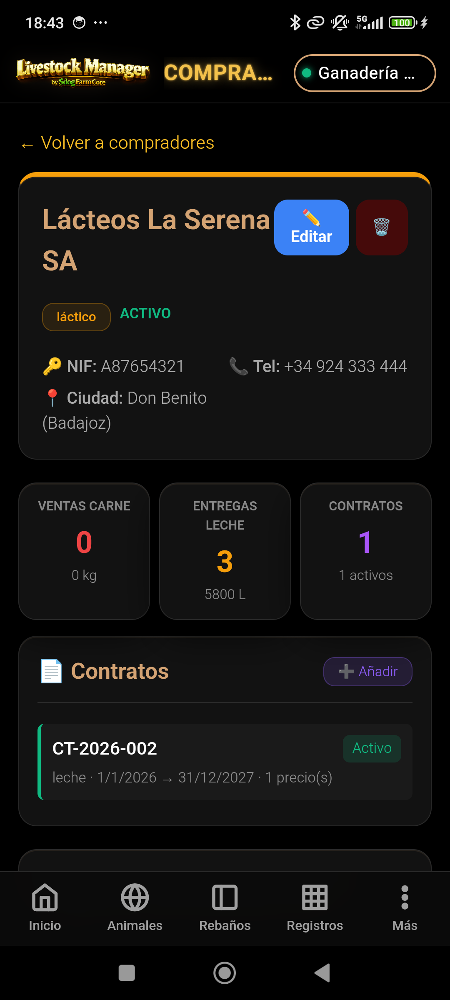
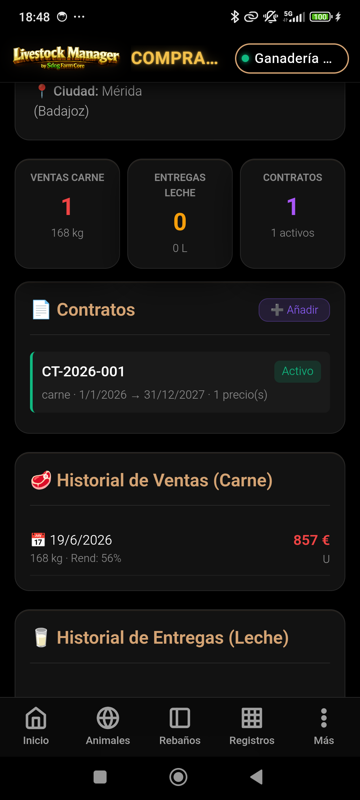
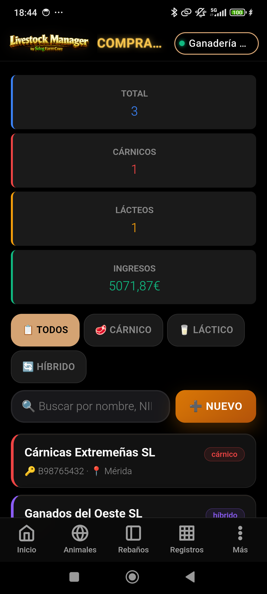

🏢 Compradores
Gestión de Clientes y Contratos — Guía completa paso a paso
MANUAL PRÁCTICO · Trazabilidad de ventas por comprador
Gestión de Clientes y Contratos — Guía completa paso a paso
Este manual documenta el módulo de Compradores de Livestock Manager. Un comprador es la empresa o persona física a quien se venden los animales (canal) o se entregan producciones de leche. Registrar los compradores es imprescindible para generar albaranes, contratos y para la trazabilidad completa de todas las ventas.
Cada comprador tiene un tipo (cárnico, láctico o híbrido) que determina en qué flujos de comercialización aparece, y una ficha con historial de ventas, entregas y contratos vigentes.
Accede al módulo de compradores desde Más → Compradores en la barra de navegación inferior.
Desde la pantalla principal puedes:
Se abre pulsando ➕ Nuevo desde la pantalla principal o ✏️ Editar desde la ficha del comprador.
| Campo | Obligatorio | Descripción |
|---|---|---|
| Nombre / Razón Social | Sí | Nombre completo de la empresa o autónomo |
| NIF/CIF | Sí | Identificación fiscal. Debe ser único en el sistema. |
| Tipo Comprador | Sí | Cárnico, Láctico o Híbrido (ver sección 3) |
| Dirección | No | Dirección postal completa |
| Código Postal | No | CP de la localidad del comprador |
| Ciudad | No | Localidad del comprador |
| Provincia | No | Provincia del comprador |
| Teléfono | No | Teléfono de contacto |
| No | Correo electrónico de contacto | |
| Condiciones de Pago | No | Ej: "Pago 30 días", "Pago al contado" |
| Notas | No | Observaciones adicionales |
| Activo | No | Checkbox para activar/desactivar el comprador (por defecto: activado) |
El tipo de comprador determina en qué módulos de comercialización aparece disponible para selección. Es importante asignarlo correctamente desde el alta.
| Tipo | Valor interno | Icono | Cuándo usarlo |
|---|---|---|---|
| Cárnico | cárnico |
🥩 | Mataderos, carnicerías mayoristas, cooperativas de carne. El comprador solo adquiere animales para sacrificio. |
| Láctico | láctico |
🥛 | Industrias lácteas, queserías, centrales lecheras. El comprador solo recoge leche. |
| Híbrido | híbrido |
🔄 | Compradores que adquieren tanto animales como leche, o cuando no está claro el tipo. Es el valor por defecto. |
En la Venta Masiva de animales (Registros → Comercialización → Venta Masiva), uno de los pasos del wizard es la selección del comprador cárnico.
En el Albarán de Leche (Registros → Comercialización → Albarán de Leche), el wizard solicita el comprador láctico al que se entrega la producción.
Pulsa sobre cualquier comprador en el listado para abrir su ficha detallada.
| Sección | Contenido |
|---|---|
| KPIs | Ventas de carne (nº y kg canal), entregas de leche (nº y litros), contratos activos |
| Datos de contacto | NIF, dirección, teléfono, email, condiciones de pago |
| Historial ventas carne | Lista de todas las ventas de carne realizadas a este comprador, con fecha, animal, peso y precio |
| Historial entregas leche | Lista de todas las entregas de leche, con fecha, litros, analítica y precio final |
| Contratos | Contratos activos e históricos con precios y condiciones |
Los contratos permiten fijar condiciones de precio y pago con un comprador para un período determinado. Se gestionan desde la ficha del comprador.
| Campo | Descripción |
|---|---|
| Número de contrato | Referencia interna del contrato (ej: CT-2026-001) |
| Tipo | carne o leche |
| Fecha inicio / fin | Período de vigencia del contrato |
| IVA (%) | Tipo de IVA aplicable (habitualmente 10%) |
| Retención REAGP (%) | Retención del Régimen Especial Agrario |
| Condiciones | Texto libre de condiciones de pago |
| Precios | Lista de precios por producto y unidad (ej: cordero cebo a 6,50 €/kg) |
La demo CHAMORRO incluye 3 compradores precargados que ilustran los tres tipos disponibles:
| Nombre | NIF/CIF | Tipo | Ciudad | Provincia |
|---|---|---|---|---|
| Cárnicas Extremeñas SL | B98765432 | 🥩 cárnico | Mérida | Badajoz |
| Lácteos La Serena SA | A87654321 | 🥛 láctico | Don Benito | Badajoz |
| Ganados del Oeste SL | B76543210 | 🔄 híbrido | Cáceres | Cáceres |
En la demo:
Secuencia visual completa del flujo de compradores con datos reales de la demo.






